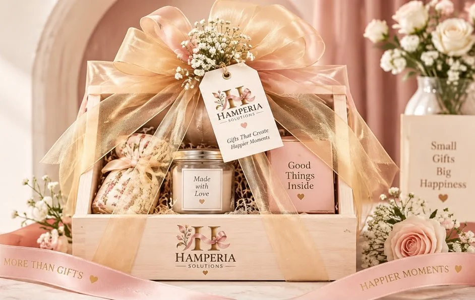

Gift hamper guide · 6 min read
How to choose a personalised gift hamper for any occasion
A simple guide to matching the recipient, occasion, contents and message without making the gift feel generic.
Let’s get started ↓
Let the recipient and occasion shape the theme.
Check contents and practical needs before choosing presentation.
Use one personal detail to make the gift feel considered.
01 / 04
Think about who will receive it
A useful gift starts with the person, not a trend. Consider their interests, daily routine, the relationship you share and whether the gift is for one person or a household. A tea-time collection, a small desk set or a festive assortment can each make sense for a different recipient.
If you are unsure about personal preferences, choose versatile items and keep the message thoughtful. For food, check for allergies and dietary needs; for fragrance, consider sensitivities; for clothing, confirm size and style before ordering.
02 / 04
Match the presentation to the moment
A birthday, new job, housewarming and client thank-you call for different tones. A handwritten card can make a simple gift feel personal, while coordinated packaging can make a team order feel polished. Choose colours and decoration that support the gift rather than compete with it.
For a corporate gift, keep branding clear and appropriate to the relationship. A logo on a message card or sleeve can be enough. For a personal gift, a name, short note or favourite colour may feel more meaningful than extra branded objects.
03 / 04
Check the details before you decide
Read the product description and contents list. Confirm the number and size of items, what is included in the box and what the image is intended to illustrate. Check ingredients and storage information for food, care details for candles or fragrance, and sizes for apparel.
Set a budget that includes packaging and delivery. If you want substitutions or customisation, ask what is possible and request the final arrangement and price in writing before payment. Availability and presentation can vary, so use the confirmed order details as the source of truth.
04 / 04
Add one detail that makes it yours
Choose one clear personal touch: a message written for the occasion, a name tag, or a small item connected to a shared memory. A concise note in your own words often has more impact than a long generic greeting.
For bulk gifts, personalisation can be planned with a master message and a verified recipient list. Confirm the spelling and the method for sharing names before the artwork is approved. Browse Hamperia’s ready-made hampers or use the store to create a custom hamper brief from individual components.
Put it into practice
Your little planning checklist.
Tick off the decisions you’ve made. You can reset this checklist at any time.